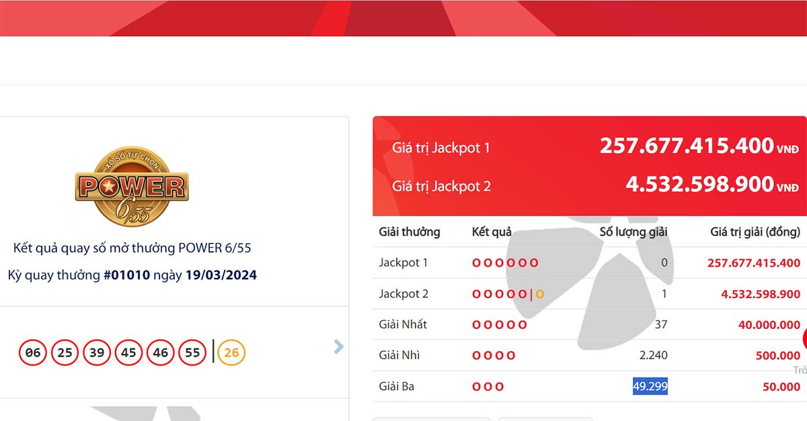

Theo thông báo của Công ty Xổ số Điện toán Việt Nam (Vietlott), trong kỳ quay số mở thưởng lần thứ 1010 của loại hình xổ số Power 6/55 diễn ra vào tối nay (19/3), Hội đồng quay thưởng của Vietlott xác định giá trị giải thưởng Jackpot 1 là gần 258 tỷ đồng. Nhưng chưa có người chơi may mắn nào trúng giải thưởng này.
Tuy nhiên, hệ thống của Vietlott đã xác định có một khách hàng trúng giải Jackpot 2 trị giá 4.532.598.900 đồng trong kỳ quay mở thưởng tối nay.
Dãy số may mắn trong kỳ quay thưởng thứ 1010 của loại hình xổ số Power 6/55 diễn ra vào hôm nay là 06 - 25 - 39 - 45 - 46 - 55 và cặp số vàng để so giải Jackpot 2 là 26.
Vé trúng Jackpot 2 là tấm vé trùng 5 trên 6 số của giải Jackpot 1 và số còn lại trùng với con số may mắn mà Vietlott chọn ngẫu nhiên.
Dãy số của giải Jackpot 1 hôm nay là 06 - 25 - 39 - 45 - 46 - 55. Tấm vé trúng Jackpot 2 là tấm vé trùng 5 trên 6 số trên và số 26.
 Tìm thấy vé số trúng giải độc đắc Vietlott hơn 4,5 tỷ đồng. Ảnh: VietlottTheo quy định của Bộ Tài chính tại Thông tư số 111/2013/TT-BTC, người sở hữu vé trúng thưởng sẽ phải thực hiện nghĩa vụ nộp thuế theo quy định hiện hành khi lĩnh thưởng.
Theo đó, vị khách hàng may mắn trúng giải độc đắc Jackpot 2 hôm nay sẽ phải đóng thuế thu nhập cá nhân 10%, tương đương với hơn 450 triệu đồng. Như vậy, số tiền mà người chơi nhận về là hơn 4 tỷ đồng.
Cũng trong kỳ quay số mở thưởng lần thứ 1.010 này, Vietlott đã tìm ra 37 người trúng giải nhất mỗi giải trị giá 40.000.000 đồng, 2.240 người trúng giải nhì mỗi giải trị giá 500.000 đồng, 49.299 người trúng giải ba mỗi giải trị giá 50.000 đồng.
Thời hạn lĩnh thưởng là 60 ngày kể từ ngày công bố giải thưởng. Quá thời hạn trên, giải sẽ bị hủy và sung vào hạng mục thu nhập khác của Vietlott.
Anh N.M.T đã may mắn với giải thưởng khổng lồ này:
Hình ảnh người trúng thưởngMong a có thể trích vài tỷ để chia cho bạn nhoa chớ đừng ăn 1 mình như vậy nhé.